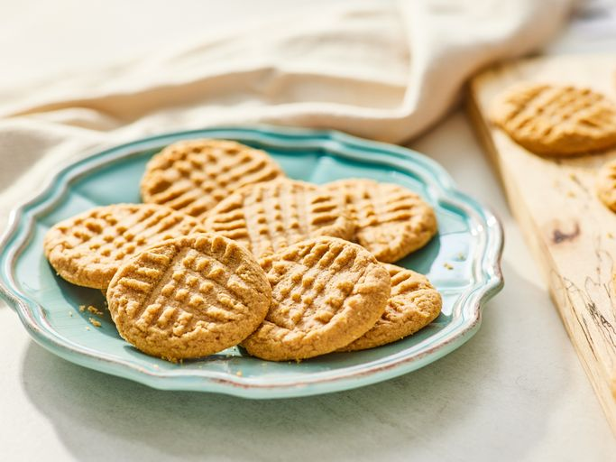

Home
Peanut Butter Cookies

Description
Easy, chewy peanut butter cookies made with just three simple ingredients:
peanut butter, sugar, and egg. A quick and delicious treat that's easy to
prepare and perfect for beginner bakers.
Ingredients
- 1 cup peanut butter
- 1 cup white sugar
- 1 Egg
Steps
-
Preheat the oven to 350°F (175°C). Line baking sheets with parchment
paper.
-
Mix the peanut butter, white sugar, and egg in a medium bowl until
smooth.
-
Roll the mixture into 1-inch balls and place them 1 inch apart on the
baking sheet. Flatten each with a fork, making a criss-cross pattern.
- Bake for 6–8 minutes until the bottoms are just barely brown.
-
Let the cookies cool briefly on the baking sheets before transferring
them to a wire rack to cool completely.
- Serve and enjoy!